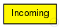
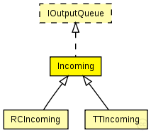

This documentation is released under the Creative Commons license
This documentation is released under the Creative Commons licenseAbstract module for the conformance checks of incoming traffic.
WARNING: Since this is an abstract module do not instantiate it! Use RCIncoming or TTIncoming instead!
TODO: Since this is an abstract module it might be better to make an interface
See also: RCIncoming, TTIncoming,
Author: Till Steinbach
The following diagram shows usage relationships between types. Unresolved types are missing from the diagram. Click here to see the full picture.
The following diagram shows inheritance relationships for this type. Unresolved types are missing from the diagram. Click here to see the full picture.
| Name | Type | Description |
|---|---|---|
| RCIncoming | simple module |
Module for the conformance checks of incoming rate-constrained traffic. |
| TTIncoming | simple module |
Module for the conformance checks of incoming time-triggered traffic. |
| Name | Value | Description |
|---|---|---|
| class | Incoming | |
| display | i=block/arrival |
| Name | Direction | Size | Description |
|---|---|---|---|
| in | input |
input of the ctc |
|
| out | output |
output of the ctc |
| Name | Title | Source | Record | Unit | Interpolation Mode |
|---|---|---|---|---|---|
| ctDropped | CT violation | sum |
// // Abstract module for the conformance checks of incoming traffic. // // @warning Since this is an abstract module do not instantiate it! Use RCIncoming or // TTIncoming instead! // // @todo Since this is an abstract module it might be better to make an interface // // @see RCIncoming, TTIncoming, // // @author Till Steinbach simple Incoming like IOutputQueue { //Incoming is implemented by the Incoming C++ Class @class(Incoming); @display("i=block/arrival"); //Statistic of the amount of packets that were dropped due to no ct violations @statistic[ctDropped](title="CT violation"; record=sum); gates: //input of the ctc input in @directIn @labels(CTFrame); //output of the ctc output out @labels(CTFrame); }
This documentation is released under the Creative Commons license